우리나라는 저출산으로 많은 사회적 어려움이 예상되고 있습니다. 그만큼 지금 태어날 한 명 한 명의 생명이 더욱 소중합니다. 이 소중한 생명을 지키려면 태아의 건강 상태를 미리 잘 파악하는 것이 중요합니다.
하지만 태아는 엄마 배 속에 있어서 의사가 직접 보고 진찰하기 어렵습니다. 그래서 병원에서는 태아 심박동 검사(CTG)로 아기의 심장 박동, 움직임, 엄마의 자궁 수축 같은 데이터를 기록해 건강 상태를 판단합니다. 오늘은 이 데이터로 태아의 건강 상태를 예측하는 인공지능 모델을 만들어 봅니다.
태아를 직접 볼 수 없다면 어떤 정보로 건강 상태를 짐작할 수 있을까요? 떠오르는 것을 2가지 이상 적어 봅시다.
머신러닝으로 맞히려는 값(target)이 숫자의 크기이면 회귀, 몇 가지 종류 중 하나이면 분류라고 합니다. 1번 학습지의 소득 예측은 회귀였습니다.
이번 데이터의 target인 태아 건강 상태는 1 정상, 2 주의, 3 나쁨 세 가지로 나뉩니다. 1, 2, 3이 숫자처럼 보이지만 크기를 계산하는 값이 아니라 무리(종류)를 나타내는 이름표입니다.
태아의 건강 상태(1 정상, 2 주의, 3 나쁨)를 맞히는 문제는 어떤 문제일까요?
캐글(kaggle.com)에서 Fetal Health Classification을 검색해 Download를 누르면 fetal_health.csv를 내려받을 수 있습니다. 태아 심박동 검사(CTG) 기록 2,126개를 모은 데이터입니다.
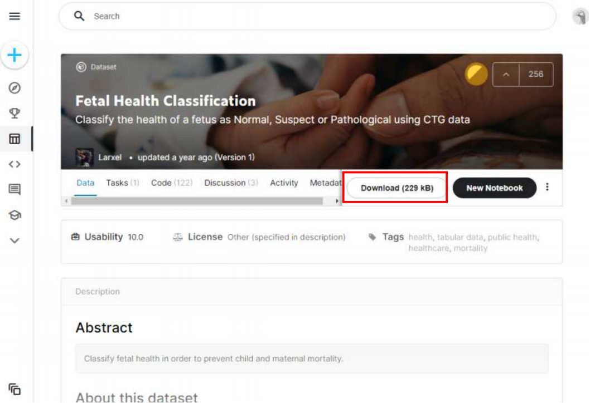
내려받은 파일에는 속성이 22개 있습니다. 이 중 이름에 histogram이 들어간 속성은 다른 속성들을 요약한 통계치라서 지우고 사용합니다. 엑셀에서 해당 열을 지운 뒤 다시 저장합니다.
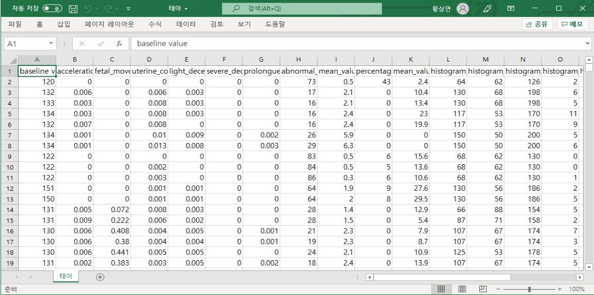
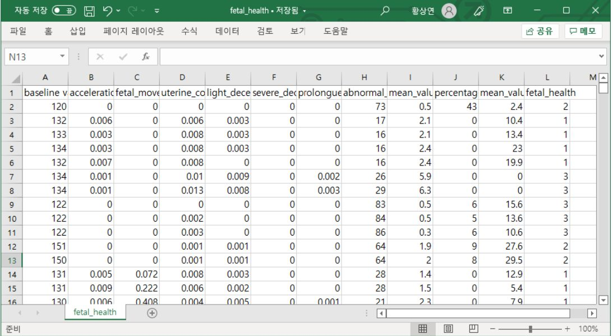
꿀팁 엑셀이 없으면 오렌지3의 Select Columns 위젯에서 histogram 속성들을 왼쪽(숨길 열)으로 옮겨도 똑같이 뺄 수 있어요.
| 속성 | 뜻 | 비고 |
|---|---|---|
| baseline value | 기준 태아 심박 수 (1분당) | |
| accelerations | 초당 심박 가속 횟수 | |
| fetal_movement | 초당 태아 움직임 횟수 | |
| uterine_contractions | 초당 자궁 수축 횟수 | |
| light_decelerations | 초당 가벼운 심박 감소 횟수 | |
| severe_decelerations | 초당 심한 심박 감소 횟수 | |
| prolongued_decelerations | 초당 오래 이어지는 심박 감소 횟수 | |
| abnormal_short_term_variability | 단기 변동성이 비정상인 시간의 비율(%) | |
| mean_value_of_short_term_variability | 단기 변동성의 평균 | |
| percentage_of_time_with_abnormal_long_term_variability | 장기 변동성이 비정상인 시간의 비율(%) | |
| mean_value_of_long_term_variability | 장기 변동성의 평균 | |
| fetal_health | 태아 건강 상태 | 1 정상, 2 주의, 3 나쁨 |
변동성: 심장 박동 간격이 얼마나 오르내리는지를 나타내는 값입니다. 건강한 태아는 심박이 적당히 오르내립니다.
설명을 읽고 빈칸을 채워 봅시다.
이 데이터는 태아 명의 검사 기록이다. histogram 속성은 다른 속성의 이므로 지운다. 지우고 남은 속성은 target을 포함해 개이고, target인 fetal_health는 가지 값으로 되어 있다.
fetal_health의 Type을 categorical, Role을 target으로 바꾸고 Apply를 누릅니다.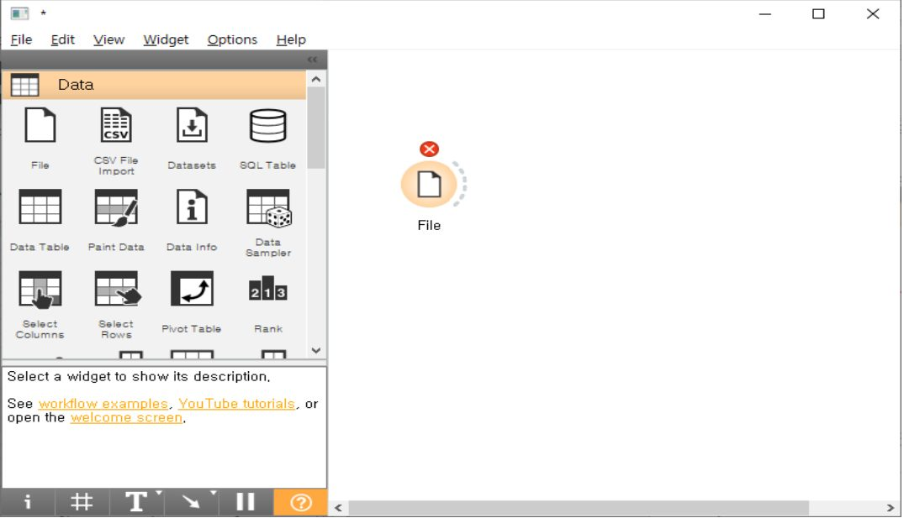
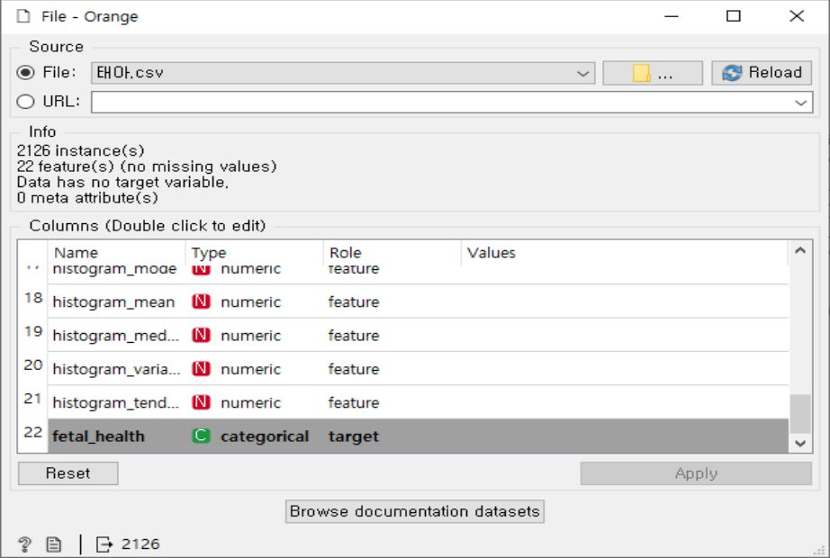
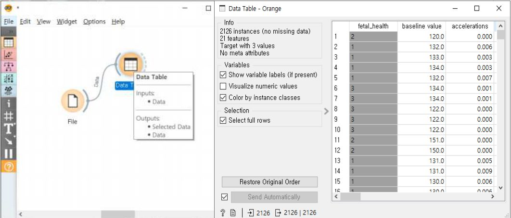
fetal_health의 Type과 Role을 골라 봅시다.
Type Role
Type을 numeric이 아니라 categorical로 해야 하는 이유를 써 봅시다.
의사가 태아를 직접 진찰하기 어려우니, 여러 데이터를 모아 건강 상태를 판단해야 합니다. 어떤 속성이 건강 상태를 잘 구분하는지 그래프로 살펴봅시다.
fetal_health로 바꾸면 정상(1)·주의(2)·나쁨(3)이 서로 다른 색으로 그려집니다. Fitted distribution을 Normal로 하면 부드러운 곡선으로 볼 수 있습니다.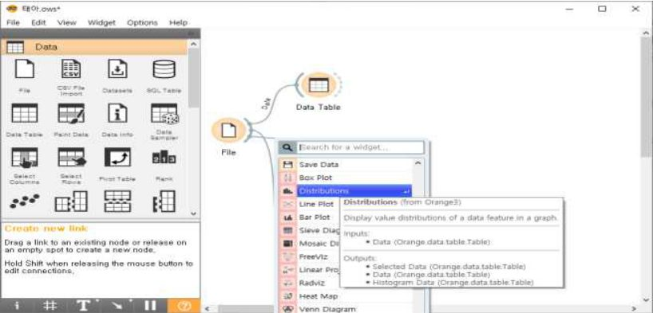
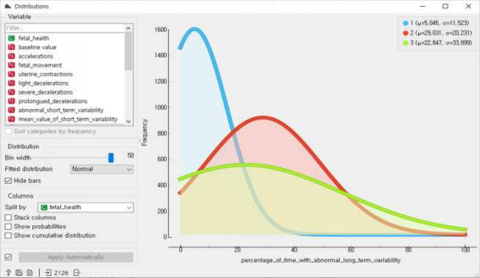
읽는 법 세 가지 색의 산이 서로 떨어져 있을수록 그 속성 하나만 보고도 건강 상태를 잘 구분할 수 있다는 뜻이에요. 산이 많이 겹치면 그 속성만으로는 구분하기 어려워요.
| 분포 그래프 | 해석 |
|---|---|
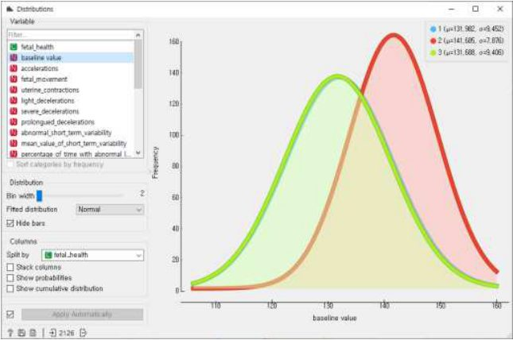 | baseline value (기준 태아 심박 수) 정상(1)과 나쁨(3)의 평균이 거의 같고 겹치는 값이 많아, 이 속성 하나만으로 분류하기는 어렵다. |
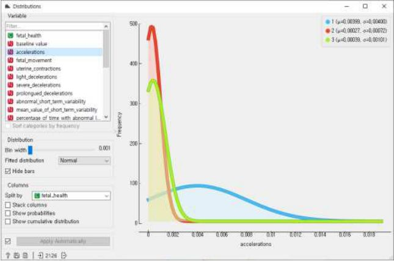 | accelerations (초당 심박 가속 횟수) 주의(2)와 나쁨(3)의 평균이 거의 같고 겹치는 값이 많아, 이 속성 하나만으로 분류하기는 어렵다. |
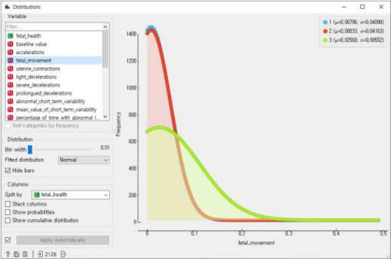 | fetal_movement (초당 태아 움직임 횟수) 정상(1)과 주의(2)의 평균이 거의 같고 겹치는 값이 많아, 이 속성 하나만으로 분류하기는 어렵다. |
Distributions에서 다른 속성도 직접 골라 보고, 세 가지 색이 가장 잘 나뉘어 보이는 속성과 그렇게 생각한 까닭을 써 봅시다.
속성 하나로 구분이 어려우면 두 개를 함께 보면 됩니다. 산점도는 x축과 y축에 속성을 하나씩 놓고 태아 한 명을 점 하나로 찍은 그래프입니다. 색이 잘 나뉘는 두 속성을 고르는 것이 중요합니다.
fetal_health로 두고, Axis x와 Axis y를 바꿔 가며 색이 잘 나뉘는 조합을 찾아봅니다.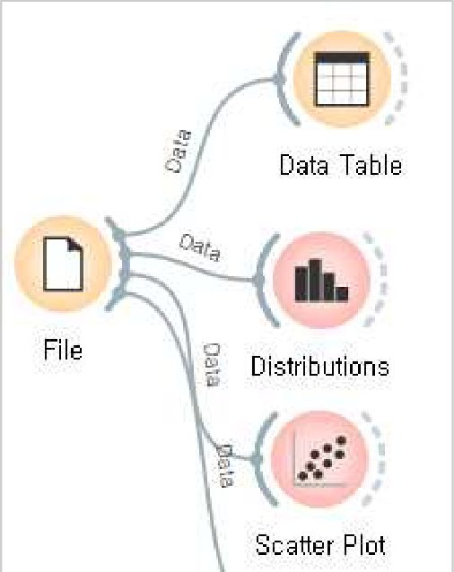
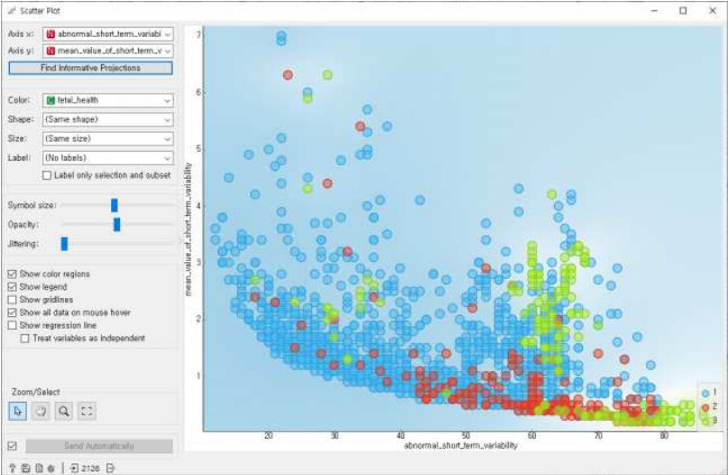
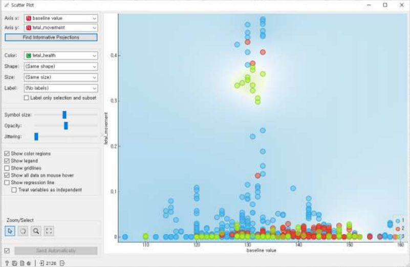
속성이 11개나 되면 두 개씩 짝지은 조합을 하나하나 다 그려 보기는 어렵습니다. 이럴 때 Scatter Plot의 Find Informative Projections(정보가 많은 조합 찾기)를 누르면, 오렌지3가 색이 잘 나뉘는 조합을 점수 순서대로 추천해 줍니다. 목록에서 한 줄을 누르면 산점도가 그 조합으로 바뀝니다.
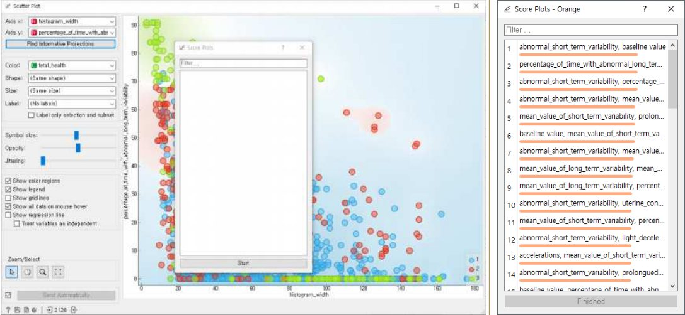
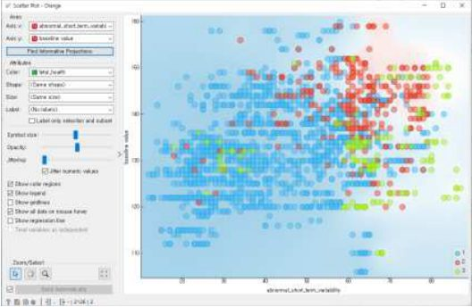
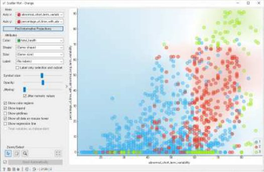
baseline value는 혼자서는 건강 상태를 잘 구분하지 못했는데, Find Informative Projections 1순위에는 abnormal_short_term_variability와 함께 들어 있습니다. 왜 그럴까요?
Rank는 속성마다 건강 상태와 관련이 큰 정도를 점수로 매겨 순서대로 보여 줍니다. 이번처럼 target이 종류(분류)일 때는 Information Gain(정보 이득), Gain Ratio(정보 이득 비율), Gini Decrease(지니 감소) 같은 점수를 씁니다. 모두 "이 속성을 알면 건강 상태를 얼마나 더 잘 나눌 수 있는가"를 나타내고, 점수가 높을수록 중요한 속성입니다.
File에 Rank를 연결하고, 왼쪽 아래 Select Attributes에서 Best ranked를 고른 뒤 숫자를 6으로 정합니다. 그러면 상위 6개 속성만 다음 위젯으로 보내집니다.
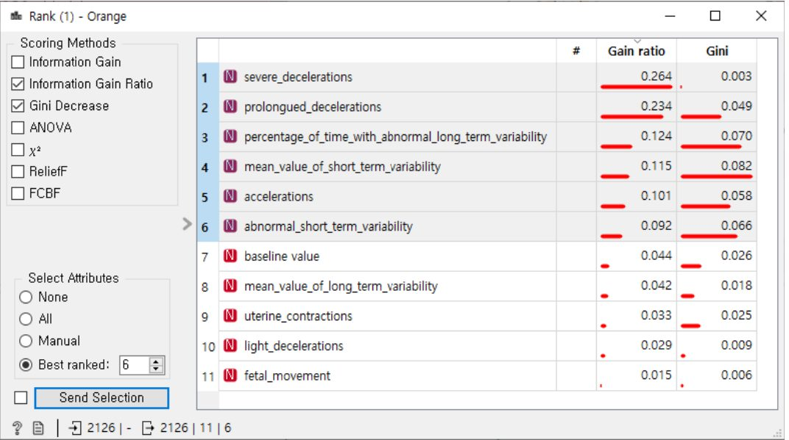
Rank 결과를 보고 빈칸을 채워 봅시다.
Gain Ratio 점수가 가장 높은 속성은 이고, 모델 학습에는 상위 개 속성만 사용한다.
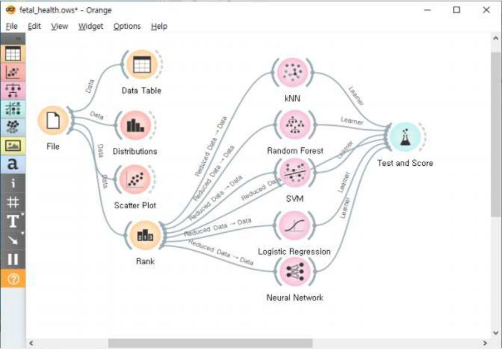
CA(Classification Accuracy, 분류 정확도)는 전체 중에서 맞힌 비율입니다. 1에 가까울수록 잘 맞힌 모델입니다. 0.9라면 100명 중 90명의 건강 상태를 맞혔다는 뜻입니다.
CA = 맞힌 개수 ÷ 전체 개수
Test and Score에는 AUC, F1, Precision(정밀도), Recall(재현율)도 함께 나옵니다. 오늘은 CA를 기준으로 비교합니다.
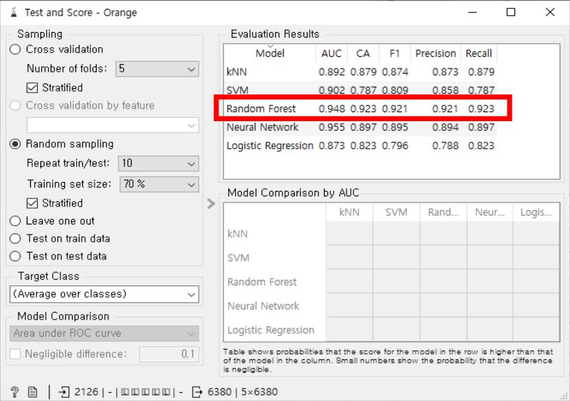
내 Test and Score 결과에서 CA를 적어 봅시다. (소수 셋째 자리까지)
| Model | CA |
|---|---|
| kNN | |
| Random Forest | |
| SVM | |
| Logistic Regression | |
| Neural Network |
CA가 가장 높은 모델은 이다.
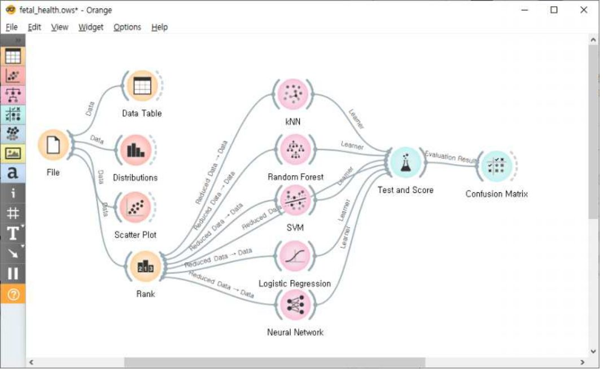
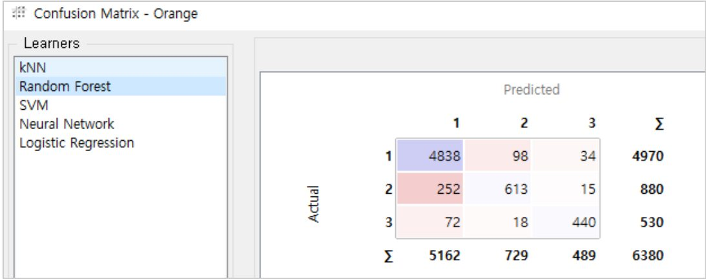
전체가 6,380개인 까닭: 2,126개 중 30%(약 638개)를 시험용으로 쓰는 일을 10번 되풀이했기 때문입니다.
그림 6-14의 Random Forest 결과를 보고 빈칸을 채워 봅시다.
정상(1)을 맞힌 개수 , 주의(2)를 맞힌 개수 , 나쁨(3)을 맞힌 개수
CA = 맞힌 개수의 합 ÷ 6,380 ≈ (소수 셋째 자리까지)
실제로 '주의(2)'인 태아 880명 중 252명을 모델이 '정상(1)'으로 잘못 예측했습니다. 전체 정확도가 높아도 이런 실수가 왜 위험한지 써 봅시다.
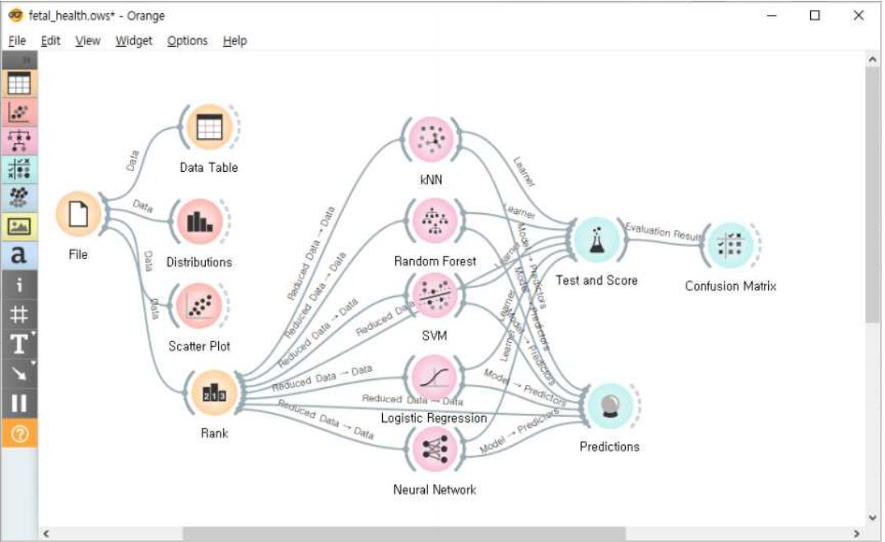
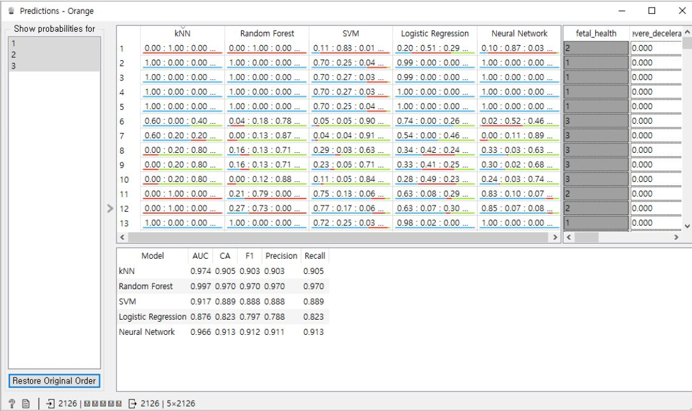
Predictions 1번 태아의 실제 상태는 2(주의)입니다. Random Forest는 1번 태아를 무엇으로 예측했나요?
Predictions 아래 평가표에서 Random Forest의 CA는 0.970으로, Test and Score의 0.923보다 높습니다. 왜 더 높게 나왔을까요?
태아 심박동 검사 데이터로 건강 상태를 정상·주의·나쁨 중 하나로 맞히는 분류 모델을 만들었습니다. 예시 결과에서는 Random Forest의 성능이 가장 좋았습니다.
0·1번 학습지(회귀)와 오늘(분류)을 비교해, 맞히려는 값과 성능을 평가하는 지표가 어떻게 달랐는지 정리해 봅시다.
이 모델이 어떤 태아를 '나쁨'이라고 예측했다면, 그 결과만 믿고 판단해도 될까요? 병원에서 이런 인공지능을 쓸 때 의사와 인공지능은 각각 어떤 역할을 해야 할지 써 봅시다.
해당하는 만큼 별을 눌러 봅시다.